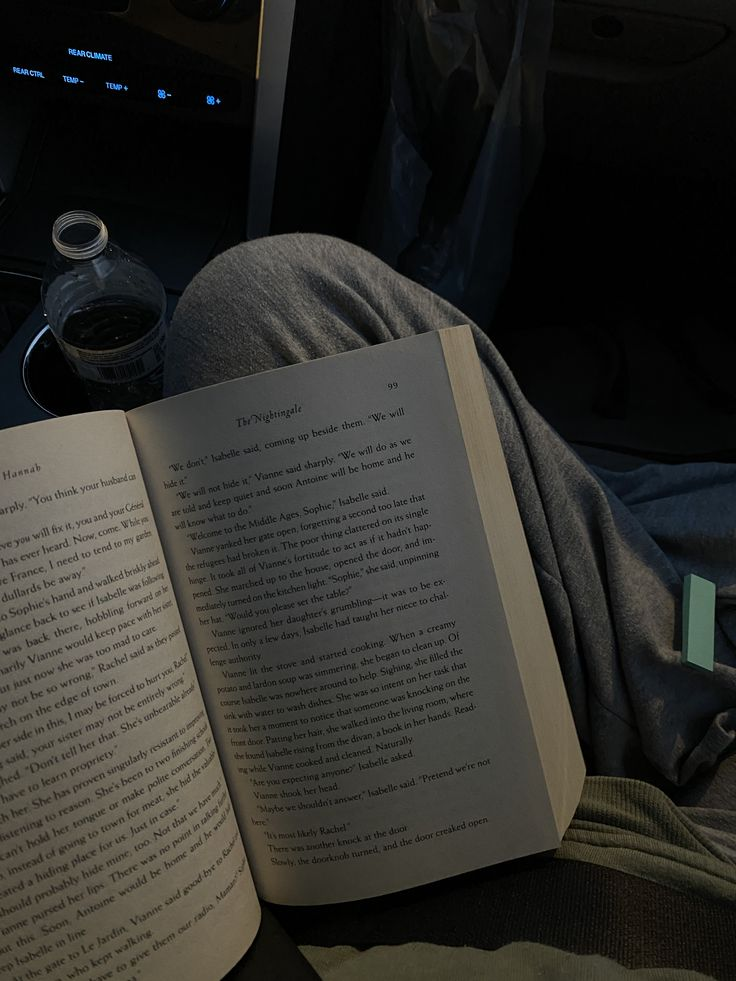

My Passions & Interests
Reading

English wasn't my first languange, well it kinda was. I spoke was is called Hmonglish, which is basiclly a mixture of Hmong and Enlish. But when it came to staring Elementary I had to learn to speak, write, and read in English. I was put into EL which is where I started to learn English, and by the time I was in 4th grade I had fallen in love with reading. I asked to stay inside during resscess while reading and as I got older I just didn't have much time for it as much as I use too. But when I do I can get really into it and finish books within a week or few days.
I just love being able to build my imagination from reading. Especilly in fantsy adventure books where it is harder to explain the area sometimes in writing. It helps me grow my imagination and vocabulary for words if i've never seen them before.
Reading has always been with me growing up, I use to think it wasted time but it helped me understand some concepts better. Now it has helped me in working on my creativity.
Arts and Crafts
![[Describe what this image shows]](images/Arts and Crafts.jpg)
I always did art but it started with sticky notes and a pen. I use to make stories out of them and over time I picked up on drawing more but it wasn't my best\ So I started working with more on hands thing like building houses out of boxes or painting or even just making charms for fun out of clay.
Over time it help me build and idea on how I learn best and how I grow from it. Some challeneges for this hobby is when I don't have the money to try a new hobby out.
It has helped me see things from diffrent persepctives on how I do art for Graphic Design or how I work best with things It also has helped me build my creativity as well.